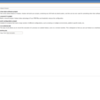
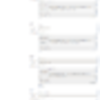
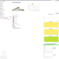
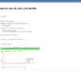
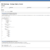
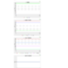
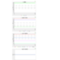

Jenkins is the leading open-source continuous integration server. Thanks to its thriving plugin ecosystem, it supports building and testing virtually any project.
The goal of this project is to provide a standard template for Jenkins jobs for PHP projects.
Required Jenkins Plugins
You need to install the following plugins for Jenkins:
- Checkstyle (for processing PHP_CodeSniffer logfiles in Checkstyle format)
- Clover (for processing PHPUnit code coverage xml output)
- DRY (for processing phpcpd logfiles in PMD-CPD format)
- HTML Publisher (for publishing the PHPUnit code coverage report, for instance)
- JDepend (for processing PHP_Depend logfiles in JDepend format)
- Plot (for processing phploc CSV output)
- PMD (for processing PHPMD logfiles in PMD format)
- Violations (for processing various logfiles)
- xUnit (for processing PHPUnit logfiles in JUnit format)
You can install these plugins using the web frontend at
http://localhost:8080/pluginManager/available
wget http://localhost:8080/jnlpJars/jenkins-cli.jar java -jar jenkins-cli.jar -s http://localhost:8080 install-plugin checkstyle java -jar jenkins-cli.jar -s http://localhost:8080 install-plugin clover java -jar jenkins-cli.jar -s http://localhost:8080 install-plugin dry java -jar jenkins-cli.jar -s http://localhost:8080 install-plugin htmlpublisher java -jar jenkins-cli.jar -s http://localhost:8080 install-plugin jdepend java -jar jenkins-cli.jar -s http://localhost:8080 install-plugin plot java -jar jenkins-cli.jar -s http://localhost:8080 install-plugin pmd java -jar jenkins-cli.jar -s http://localhost:8080 install-plugin violations java -jar jenkins-cli.jar -s http://localhost:8080 install-plugin xunit java -jar jenkins-cli.jar -s http://localhost:8080 safe-restart
In the above, replace localhost:8080 with the hostname and port of your Jenkins installation.
Required PHP Tools
pear channel-discover pear.pdepend.org pear channel-discover pear.phpmd.org pear channel-discover pear.phpunit.de pear channel-discover components.ez.no pear channel-discover pear.symfony-project.com pear install pdepend/PHP_Depend-beta pear install phpmd/PHP_PMD-alpha pear install phpunit/phpcpd pear install phpunit/phploc pear install PHPDocumentor pear install PHP_CodeSniffer pear install --alldeps phpunit/PHP_CodeBrowser pear install --alldeps phpunit/PHPUnit
Build Automation
The Apache Ant build.xml build script below assumes that a build.properties file exists in the same directory that configures the sourcecode directory (source=${basedir}/src, for instance).
<project name="name-of-project" default="build" basedir=".">
<property file="build.properties"/>
<target name="clean">
<!-- Clean up -->
<delete dir="${basedir}/build"/>
<!-- Create build directories -->
<mkdir dir="${basedir}/build/api"/>
<mkdir dir="${basedir}/build/code-browser"/>
<mkdir dir="${basedir}/build/coverage"/>
<mkdir dir="${basedir}/build/logs"/>
<mkdir dir="${basedir}/build/pdepend"/>
</target>
<!-- Run unit tests and generate junit.xml and clover.xml -->
<target name="phpunit">
<exec executable="phpunit" failonerror="true"/>
</target>
<!-- Run the pdepend, phpmd, phpcpd, phpcs, phpdoc and phploc tasks
in parallel using a maximum of 2 threads. -->
<target name="parallelTasks">
<parallel threadCount="2">
<antcall target="pdepend"/>
<antcall target="phpmd"/>
<antcall target="phpcpd"/>
<antcall target="phpcs"/>
<antcall target="phpdoc"/>
<antcall target="phploc"/>
</parallel>
</target>
<!-- Generate jdepend.xml and software metrics charts -->
<target name="pdepend">
<exec executable="pdepend">
<arg line="--jdepend-xml=${basedir}/build/logs/jdepend.xml
--jdepend-chart=${basedir}/build/pdepend/dependencies.svg
--overview-pyramid=${basedir}/build/pdepend/overview-pyramid.svg
${source}" />
</exec>
</target>
<!-- Generate pmd.xml -->
<target name="phpmd">
<exec executable="phpmd">
<arg line="${source}
xml
codesize,design,naming,unusedcode
--reportfile ${basedir}/build/logs/pmd.xml" />
</exec>
</target>
<!-- Generate pmd-cpd.xml -->
<target name="phpcpd">
<exec executable="phpcpd">
<arg line="--log-pmd ${basedir}/build/logs/pmd-cpd.xml ${source}" />
</exec>
</target>
<!-- Generate phploc.csv -->
<target name="phploc">
<exec executable="phploc">
<arg line="--log-csv ${basedir}/build/logs/phploc.csv ${source}" />
</exec>
</target>
<!-- Generate checkstyle.xml -->
<target name="phpcs">
<exec executable="phpcs" output="/dev/null">
<arg line="--report=checkstyle
--report-file=${basedir}/build/logs/checkstyle.xml
--standard=PEAR
${source}" />
</exec>
</target>
<!-- Generate API documentation -->
<target name="phpdoc">
<exec executable="phpdoc">
<arg line="-d ${source} -t ${basedir}/build/api" />
</exec>
</target>
<target name="phpcb">
<exec executable="phpcb">
<arg line="--log ${basedir}/build/logs
--source ${source}
--output ${basedir}/build/code-browser" />
</exec>
</target>
<target name="build" depends="clean,parallelTasks,phpunit,phpcb"/>
</project>
The build.xml script above assumes that an XML configuration file for PHPUnit is used to configure the following logging targets:
<logging>
<log type="coverage-html" target="build/coverage" title="Name of Project"
charset="UTF-8" yui="true" highlight="true"
lowUpperBound="35" highLowerBound="70"/>
<log type="coverage-clover" target="build/logs/clover.xml"/>
<log type="junit" target="build/logs/junit.xml" logIncompleteSkipped="false"/>
</logging>
Executing the build.xml script above will produce the following build directory:
build
|-- api ...
|-- code-browser ...
|-- coverage ...
`-- logs
|-- checkstyle.xml
|-- clover.xml
|-- jdepend.xml
|-- junit.xml
|-- phploc.csv
|-- pmd-cpd.xml
`-- pmd.xml
These build artifacts will be processed by Jenkins.
Using the Job Template
- Check out the
php-jenkins-templateproject from Git:cd $JENKINS_HOME/jobs git clone git://github.com/sebastianbergmann/php-jenkins-template.git php-template
- Reload Jenkins' configuration, for instance using the Jenkins CLI:
java -jar jenkins-cli.jar -s http://localhost:8080 reload-configuration
- Click on "New Job".
- Enter a "Job name".
- Select "Copy existing job" and enter "php-template" into the "Copy from" field.
- Click "OK".
- Replace "localhost:8080" with the hostname and port of your Jenkins installation and replace the two occurrences of "job-name" with the name of your job in the "Description" text box.
- Disable the "Disable Build" option.
- Fill in your "Source Code Management" information.
- Configure a "Build Trigger", for instance "Poll SCM".
- Configure an Ant-based build.
- Click "Save".
Screenshots
    {kind=link}
{kind=link}
{kind=link}
{kind=link}
{kind=link}

 

{kind=link}
Support
Most web applications are changed and adapted quite frequently and quickly. Their environment, for example the size and the behaviour of the user base, are constantly changing. What was sufficient yesterday can be insufficient today. Especially in a web environment it is important to monitor and continuously improve the internal quality not only when developing, but also when maintaining the software.
thePHP.cc offers consulting and training that set you on a path to create, maintain and extend sustainable software of high quality with PHP and leverage Jenkins to monitor the various aspects of software quality.